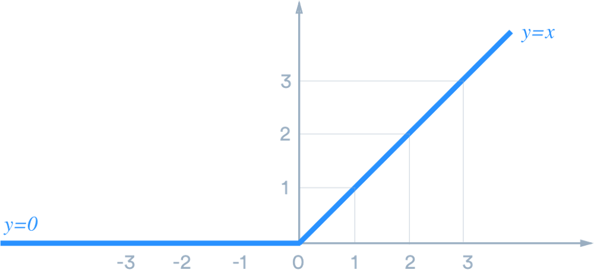

Supervised Learning
The ReLU function one of the most common activation function used in neural networks. This activation function is expecially useful in CNN's. ReLU is a linear fucntion that activates any positive value.
